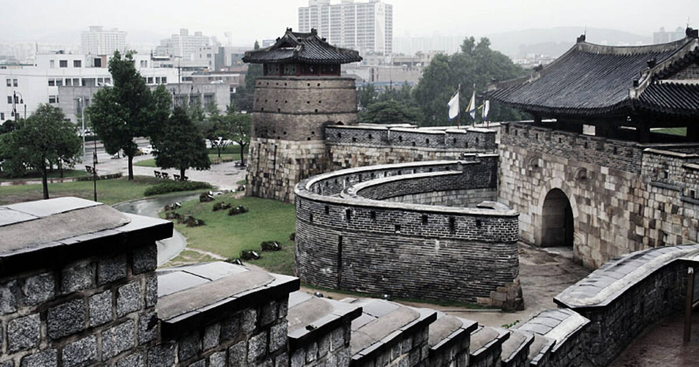

History
The Great Unification Buddha, a 14.6-meter/48-foot, 108 ton gilt-bronze Buddha statue, called "Tongil Daebul", sits atop a 4.3-meter/15-foot high pedestal, of the same material, making the total height 18.9-meter/62-foot, excluding the lightning rod and nimbus.[2]
The lotus pedestal is flanked with 16 delicately engraved panels and the forehead of Tongil Daebul is adorned with eight 8-centimeter/3-inch stones of amber, with a single piece of jade in the center that is 10-centimeter/4-inch in diameter.[2]
Tongil Daebul sits with legs crossed and half-closed eyes in meditation, his lips displaying a perceptible smile. A flowing robe with gentle folds, revealing the right shoulder, drapes the Buddha's robust torso. The hands of Tongil Daebul are positioned in the mudra symbolizing the "enlightened one."
Contained within the hollow statue are three pieces of the Buddha's sari, remains collected after his cremation, donated by the Myanmar government, and the Tripitaka, the original Buddhist scriptures.[2]
The project to construct this statue of the Buddha cost 3.8 billion won ($4.1 million), raised through the contributions for over a decade from over 300,000 small donations from anonymous donors visiting the temple.[2]
This statue represents the crucial wish of the Korean people for the reunification of the divided country.[3]


1 / 3

2 / 3
3 / 3
Hwaseong Fortress
Hwaseong Fortress or Suwon Hwaseong is a fortification surrounding the centre of Suwon, the provincial capital of Gyeonggi-do, in South Korea.[1] It was built from 1794 to 1796 by King Jeongjo of the Joseon dynasty to house and honour the remains of his father, Prince Sado. Sado had been executed by being locked alive inside a rice chest by his own father King Yeongjo after failing to obey a command to commit suicide. Located 30 kilometres (19 mi) south of Seoul and enclosing much of central Suwon, the fortress includes King Jeongjo's palace Haenggung. The fortress and enclosed palace were designated as a World Heritage site by UNESCO in 1997. It comprises among many other features the palace, a perimeter wall, four main gates, and two sluicegates over the Suwoncheon, Suwon's main stream, which flows through the centre of the fortress.
History
Hwaseong is a piled-stone and brick fortress of the Joseon Dynasty that surrounds the centre of Suwon City, of Gyeonggi-do Province. It was built in the late 18th century by King Jeongjo for defensive purposes, to form a new political basis and to house the remains of his father, Crown Prince Jangheon. The massive walls of the fortress, which are 5.74 km in length, enclose an area of 130 ha and follow the topography of the land. The Suwoncheon, the main stream in Suwon, flows through the centre of the fortress.